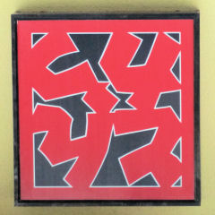

これは何だろう？
最初に
見たときは
絵に見えた。
その道を
通ったのは
確か、朝の
９時頃で、
店はまだ
閉まっていた。
雑貨屋か？
喫茶店か？
コンビニでは
なさそうだし。
抽象的な絵が
入口に
ドーンと
飾ってあって、
さすが、本土は
都会だなあ
と田舎者は思った。
実は、とんかつと
書いてある。
多義図形とか
錯視図形とか
反転図形と
呼ばれるもの。
図と地が逆転して
赤い海に黒い島が
浮いている様にも
見えて面白い。
ここでは、あえて
１８０°（π）
回転して掲載した。